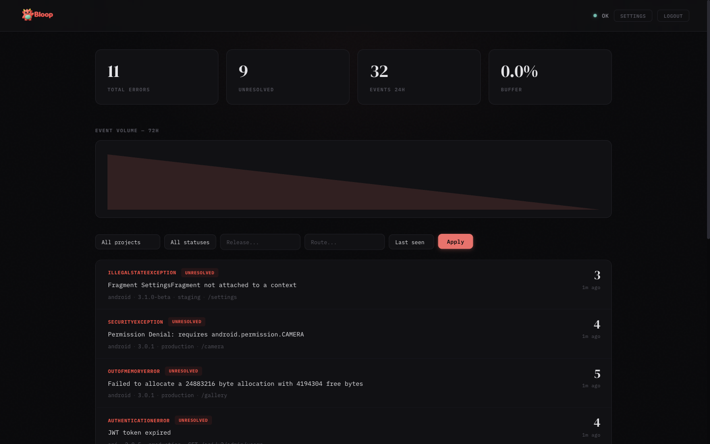
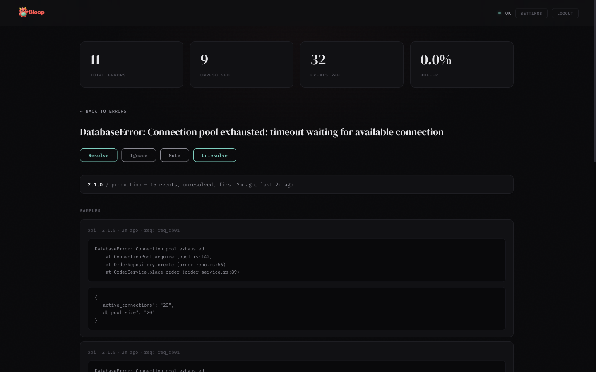
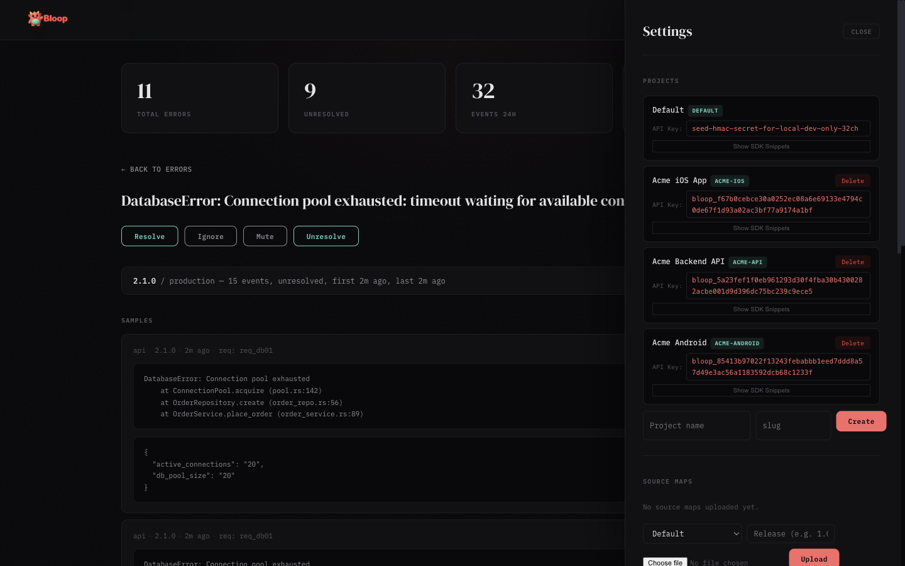
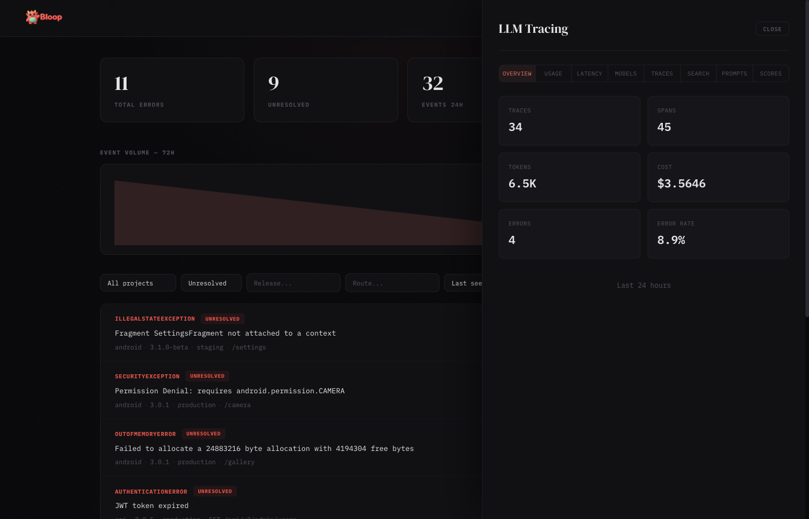
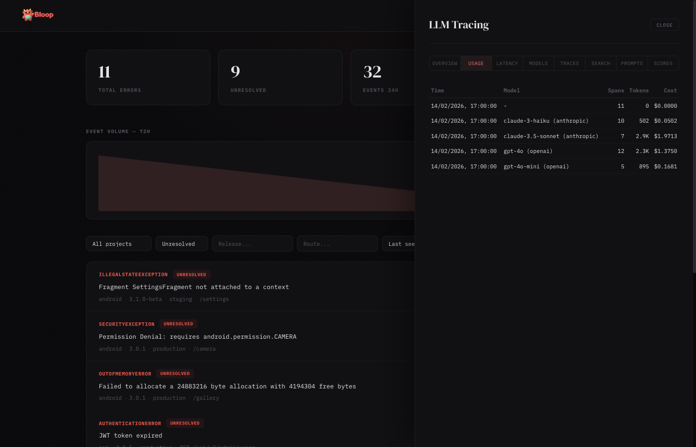
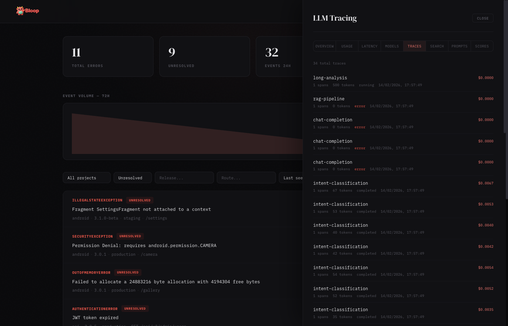
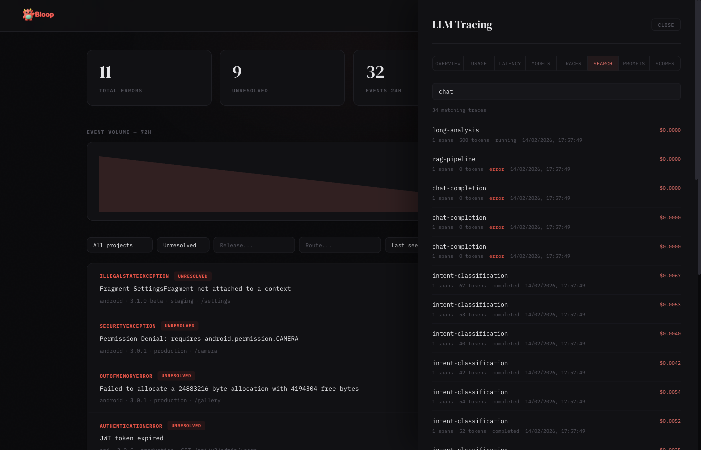
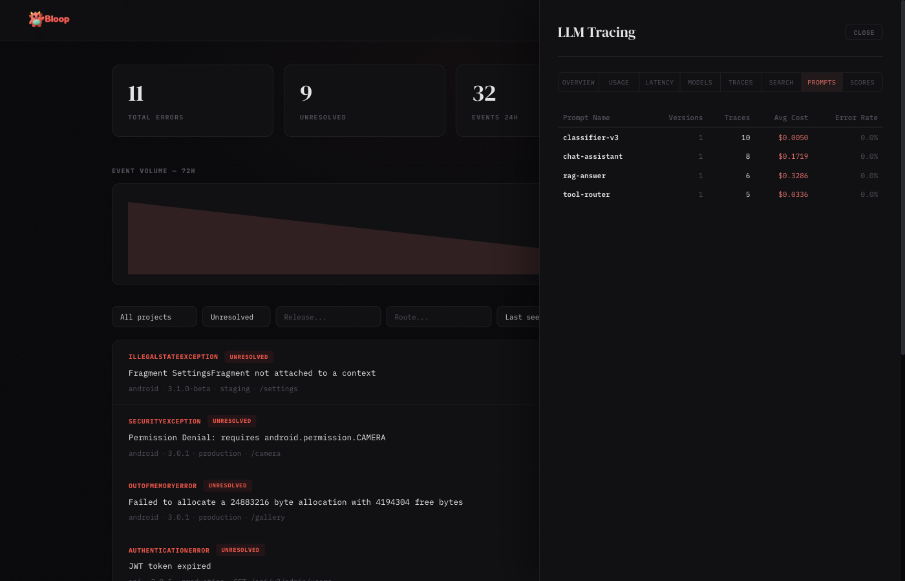
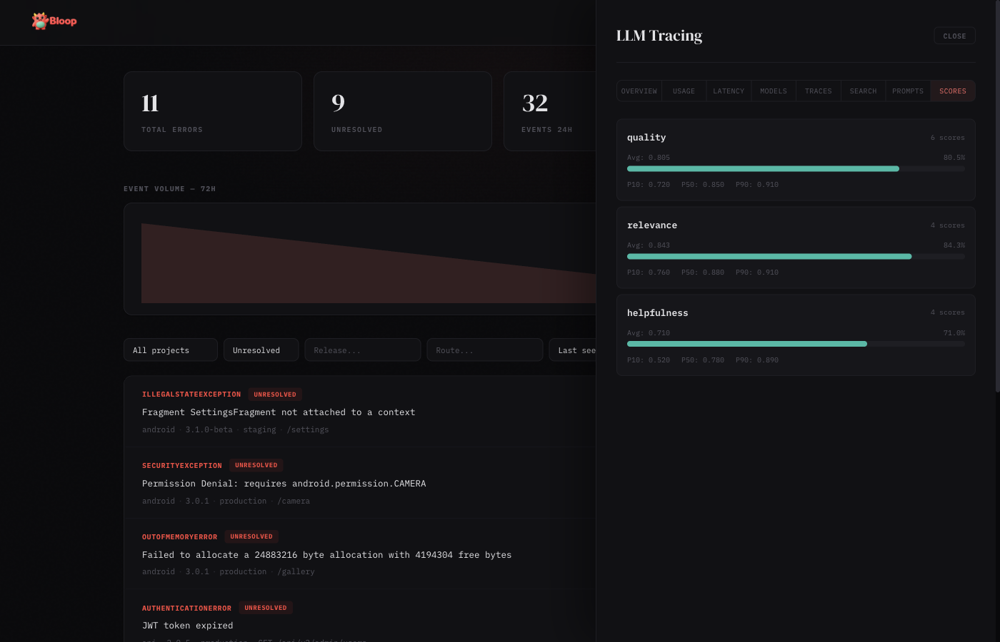

Dashboard Guide
The Bloop dashboard is a single-page application served at the root URL of your Bloop instance.
Main View
- Stats bar — Shows total errors, unresolved count, events in the last 24 hours, and buffer usage
- Trend chart — SVG area chart showing hourly event volume over the last 72 hours
- Error list — Aggregated errors with sparklines, sorted by last seen. Each row shows error type, message, count, source badge, and a 24-hour trend sparkline
- Filters — Filter by project, status (unresolved/resolved/ignored/muted), release, route, and sort order
Error Detail
Click any error row to see the detail view:
- Aggregates — Breakdown by release and environment with event counts and timestamps
- Samples — Up to 5 sample occurrences with stack traces, metadata, and source info
- Deobfuscated stacks — When source maps are uploaded, a toggle appears to switch between Original and Raw stack views
- Actions — Resolve, Ignore, Mute, or Unresolve the error
- Status timeline — Audit trail of all status changes with timestamps and who made them
Settings
Click the gear icon in the header to open the settings panel (admin only):
- Projects — Create, view, and delete projects. Each project shows its full API key with click-to-copy and expandable SDK snippets
- API Tokens — Create, list, and revoke scoped bearer tokens for programmatic access. Tokens are project-scoped with granular permissions (errors, sourcemaps, alerts)
- Source Maps — Upload
.mapfiles per project and release, view and delete uploaded maps - Alerts — Create and manage alert rules, add notification channels (Slack, webhook, email), enable/disable and test rules
- Users — View registered users, promote/demote admin roles, and remove accounts
- Invites — Generate invite links for new users
- Data Retention — Configure global and per-project retention periods, view storage stats, and trigger manual purges
Insights Panel
When the analytics feature is enabled (--features analytics), an Insights button appears in the header. The button is hidden when analytics is not compiled in — the dashboard probes /v1/analytics/spikes on load and only shows the button if it gets a 200 response.
The Insights panel has five sub-tabs:
- Spikes — Anomalous errors detected via z-score analysis. Each row shows a horizontal bar (width = z-score severity), the error message, event count, and z-score value. Color-coded: dim for z≥2.5, coral for z≥3, red for z≥4
- Movers — Errors with the largest absolute change between the current and previous time window. Shows delta arrows, count comparison, and percentage badges
- Correlations — Pairs of errors that tend to spike together (Pearson correlation ≥0.7, requiring ≥6 data points). Useful for root cause discovery
- Releases — Impact score per release combining new fingerprints and error count deltas. Cards are color-coded: red = high impact (score >50), green = improvement (score <0), neutral otherwise
- Environments — Table showing each environment's total count, percentage bar, unique error count, and P50/P90/P99 hourly rate percentiles
Results are cached for 60 seconds (configurable via cache_ttl_secs). All queries respect the active project filter.
LLM Tracing Panel
When LLM tracing is enabled (--features llm-tracing), an LLM button appears in the header. Like Insights, it auto-detects by probing /v1/llm/overview?hours=1 on load.
Bloop is provider-agnostic — it works with any LLM you use: OpenAI (GPT-4o, o1, etc.), Anthropic (Claude), Google (Gemini), Mistral, Cohere, LLaMA, or any local/self-hosted model. You pass the model name and provider as strings when creating traces, so Bloop tracks whatever your code reports.
The LLM panel has eight sub-tabs:
Overview
Summary cards showing total traces, total spans, tokens consumed, cost in dollars, average latency, and error rate for the selected time window.
Usage
Hourly breakdown of token consumption and cost, grouped by model. Each row shows the hour bucket, model name, request count, input/output tokens, and total cost.
Latency
Latency percentiles (p50, p90, p99) by model, plus average time-to-first-token. Useful for identifying slow models or degraded performance.
Models
Per-model comparison table: total calls, tokens consumed, cost, average latency, and error rate. Sorted by cost to quickly identify the most expensive models. Each model card also displays per-token pricing (input/output cost per million tokens) when pricing data is available, with support for custom price overrides.
Traces
Paginated list of all LLM traces with status badges, model info, token counts, cost, and latency. Click any trace to expand its full span hierarchy with parent-child relationships.
Search
Full-text search across trace names, input, and output content. Results show matching traces with highlighted context.
Prompts
Prompt version tracking table: prompt name, latest version, total traces, average latency, average tokens, cost, and error rate. Useful for comparing prompt performance across versions.
Scores
Score cards showing quality metrics attached to traces. Each card displays the score name, count, average value (with color-coded bar: red < 0.3, amber 0.3–0.7, green > 0.7), min, and max values.
Enabling LLM Tracing
# Build with LLM tracing enabled
docker build --build-arg FEATURES=llm-tracing -t bloop .
# Or enable both analytics and LLM tracing
docker build --build-arg FEATURES=analytics,llm-tracing -t bloop .
# Configure in config.toml
[llm_tracing]
enabled = true
default_content_storage = "metadata_only"Content storage policies control what gets persisted: none (no prompts/completions), metadata_only (tokens and costs only), or full (everything). Set per-project via the Settings panel or API.
Auto-Instrumentation
The TypeScript and Python SDKs support zero-config auto-instrumentation for OpenAI and Anthropic clients. Wrap your LLM client once and every call is automatically traced — model, tokens, latency, time-to-first-token (streaming), and errors are all captured.
import { BloopClient } from "@dthink/bloop-sdk";
import OpenAI from "openai";
const bloop = new BloopClient({ endpoint: "...", projectKey: "..." });
const openai = bloop.wrapOpenAI(new OpenAI());
// Every call is automatically traced
const response = await openai.chat.completions.create({
model: "gpt-4o",
messages: [{ role: "user", content: "Hello" }],
});from bloop import BloopClient
from openai import OpenAI
client = BloopClient(endpoint="...", project_key="...")
openai = client.wrap_openai(OpenAI())
# Every call is automatically traced
response = openai.chat.completions.create(
model="gpt-4o",
messages=[{"role": "user", "content": "Hello"}],
)Anthropic is also supported via wrapAnthropic() / wrap_anthropic(). Both wrappers auto-detect the provider from the client’s base URL, so custom endpoints (Azure OpenAI, AWS Bedrock, etc.) are identified correctly.
OpenRouter & Proxy Providers
OpenRouter, LiteLLM proxy, and any OpenAI-compatible endpoint work out of the box with wrapOpenAI(). The provider is auto-detected from the base URL:
import { BloopClient } from "@dthink/bloop-sdk";
import OpenAI from "openai";
const bloop = new BloopClient({ endpoint: "...", projectKey: "..." });
// OpenRouter — detected as provider "openrouter"
const openrouter = bloop.wrapOpenAI(new OpenAI({
baseURL: "https://openrouter.ai/api/v1",
apiKey: process.env.OPENROUTER_API_KEY,
}));
// All calls are traced with provider="openrouter"
const response = await openrouter.chat.completions.create({
model: "anthropic/claude-3.5-sonnet",
messages: [{ role: "user", content: "Hello" }],
});This also works with Azure OpenAI, AWS Bedrock, Together, Groq, Fireworks, and any service that exposes an OpenAI-compatible API. The provider name is extracted from the hostname automatically.
pi-ai (Unified LLM API)
The TypeScript SDK supports @mariozechner/pi-ai, a unified LLM library that supports 15+ providers with automatic model discovery. Wrap the complete() and stream() functions:
import { BloopClient } from "@dthink/bloop-sdk";
import { complete, stream, getModel } from "@mariozechner/pi-ai";
const bloop = new BloopClient({ endpoint: "...", projectKey: "..." });
// Wrap complete() for non-streaming calls
const tracedComplete = bloop.wrapPiAiComplete(complete);
const model = getModel("openai", "gpt-4o");
const response = await tracedComplete(model, {
systemPrompt: "You are helpful.",
messages: [{ role: "user", content: [{ type: "text", text: "Hello" }] }],
});
// Wrap stream() for streaming with TTFT tracking
const tracedStream = bloop.wrapPiAiStream(stream);
const eventStream = tracedStream(model, context);
for await (const event of eventStream) {
// handle text, thinking, tool_call events
}
const result = await eventStream.result();The wrapper automatically extracts the provider and model name from pi-ai’s Model object, and reads token usage from the AssistantMessage.usage field. All 15+ pi-ai providers are supported: OpenAI, Anthropic, Google, Mistral, Groq, xAI, Cerebras, OpenRouter, Azure, Bedrock, and more.
Server-Side Pricing
Cost is calculated automatically on the server from a database of 2,500+ model prices (sourced from LiteLLM, refreshed hourly). SDKs send cost: 0 and the server fills in the correct cost based on model and token counts. This means:
- No SDK updates when model prices change
- All 7 SDKs benefit immediately
- Custom per-model price overrides via
PUT /v1/llm/pricing/overrides
If an SDK sends an explicit cost (non-zero), it is preserved and not overridden.
Error Lifecycle
Every error in Bloop has a status that tracks its lifecycle:
| Status | Meaning | Alerts fire? |
|---|---|---|
unresolved | Active issue that needs attention | Yes |
resolved | Fixed and deployed | Yes (regression) |
ignored | Known issue, not worth fixing | No |
muted | Temporarily silenced | No |
Status Transitions
All status changes are recorded in an audit trail visible in the error detail view.
- New error →
unresolved(automatic) - Resolve →
resolved— marks the error as fixed - Ignore →
ignored— permanently suppresses alerts for this error - Mute →
muted— temporarily suppresses alerts - Unresolve →
unresolved— re-opens the error for attention
Regression Detection
If a resolved error receives a new occurrence, Bloop can detect the regression. The error appears again in the unresolved list with its full history preserved.
API
# Resolve
curl -X POST http://localhost:5332/v1/errors/FINGERPRINT/resolve \
-H "Cookie: session=YOUR_SESSION_TOKEN"
# Mute
curl -X POST http://localhost:5332/v1/errors/FINGERPRINT/mute \
-H "Cookie: session=YOUR_SESSION_TOKEN"
# Unresolve
curl -X POST http://localhost:5332/v1/errors/FINGERPRINT/unresolve \
-H "Cookie: session=YOUR_SESSION_TOKEN"
# View status history
curl http://localhost:5332/v1/errors/FINGERPRINT/history \
-H "Cookie: session=YOUR_SESSION_TOKEN"Troubleshooting
Common Issues
| Problem | Cause | Solution |
|---|---|---|
401 Unauthorized on ingest |
HMAC signature doesn't match | Ensure you're signing the exact request body with the correct API key. The signature must be a hex-encoded HMAC-SHA256 of the raw JSON body. |
401 invalid project key |
API key not recognized | Check the X-Project-Key header matches a project's API key in Settings → Projects. Keys are case-sensitive. |
| Events accepted but not appearing | Buffer full or processing delay | Check /health endpoint — if buffer_usage is near 1.0, the pipeline is backed up. Events are batched every 2 seconds. |
| Passkey registration fails | rp_id / rp_origin mismatch |
The rp_id must match your domain (e.g., errors.myapp.com) and rp_origin must match the full URL including protocol. |
| Source maps not deobfuscating | Release version mismatch | The release in the source map upload must exactly match the release field sent with the error event. |
| Slack notifications not arriving | Webhook URL expired or channel archived | Test the alert via Settings → Alerts → Test. Check that the Slack app is still installed and the channel exists. |
| Dashboard shows stale data | Browser caching | Hard refresh (Cmd+Shift+R / Ctrl+Shift+R). Stats auto-refresh every 30 seconds. |
| High memory usage | Large moka cache | Source maps and aggregates are cached in memory. Restart the server to clear caches, or reduce the number of uploaded source maps. |
500 Unable To Extract Key! |
Rate limiter can't determine client IP | This happens when running behind a reverse proxy (Traefik, Nginx) that doesn't forward client IP headers. Upgrade to the latest Bloop release, which uses SmartIpKeyExtractor to read X-Forwarded-For and X-Real-IP headers automatically. |
403 Forbidden with bearer token |
Token lacks required scope | Check the token's scopes. Read operations require *:read scopes, write operations require *:write scopes. Create a new token with the needed scopes. |
Checking Server Health
curl http://localhost:5332/health | jq .
# Response:
# {
# "status": "ok",
# "db_ok": true,
# "buffer_usage": 0.002
# }buffer_usage shows the MPSC channel fill ratio (0.0 = empty, 1.0 = full). If consistently above 0.5, consider increasing ingest.channel_capacity or pipeline.flush_batch_size.
Debug Logging
# Enable detailed logging
RUST_LOG=bloop=debug cargo run
# Or in Docker
docker run -e RUST_LOG=bloop=debug ...Debug logging shows every ingested event, fingerprint computation, batch write, and alert evaluation.